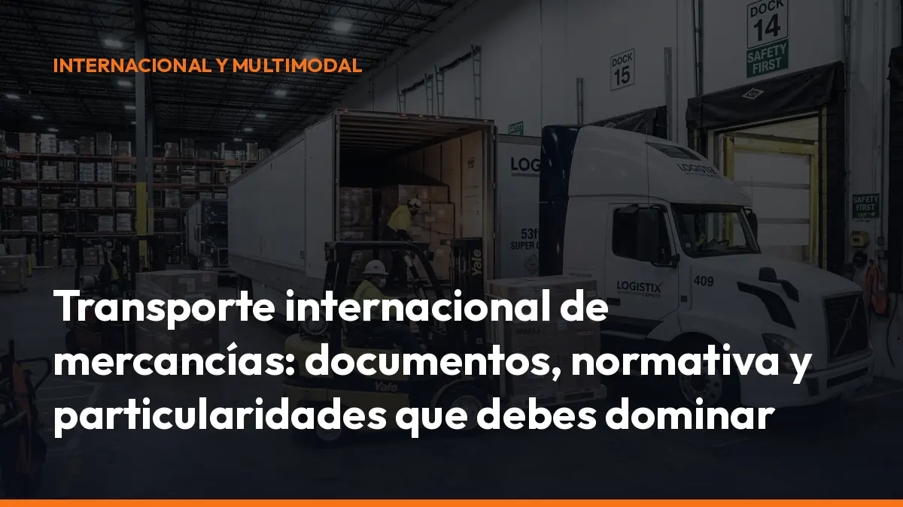

Transporte internacional de mercancías: documentos, normativa y particularidades que debes dominar

Un error en el freight paperwork puede provocar retrasos, inmovilizaciones, sanciones o problemas para cobrar el servicio.
La solución es sencilla: prepara toda la documentación antes de salir y llévala disponible en el móvil.
Evita problemas en frontera con la documentación correcta
Cada trayecto internacional puede exigir documentos diferentes. No es lo mismo circular entre España y Francia que transportar mercancía entre España y Reino Unido, Suiza o Marruecos.
Antes de iniciar la ruta, comprueba estos documentos:
- Carta de porte CMR: acredita el contrato de transporte internacional por carretera, identifica la mercancía y fija las responsabilidades de las partes.
- Factura comercial: necesaria para justificar el valor de la mercancía, especialmente cuando existe despacho aduanero.
- Packing list: detalla bultos, pesos, medidas y contenido de la carga.
- Documentación aduanera: necesaria cuando cruzas una frontera exterior de la Unión Europea.
- Número EORI: identifica a la empresa ante las autoridades aduaneras.
- Documentos de tránsito T1 o T2: pueden ser necesarios según el origen, destino y régimen aduanero de la mercancía.
- Autorizaciones especiales: exigibles para mercancías peligrosas, cargas sobredimensionadas, animales o productos sometidos a controles específicos.
- Seguro y documentación del vehículo: tenlos disponibles para cualquier inspección.
- Documentación del conductor: permiso de conducir, tarjeta de cualificación CAP, pasaporte o documento de identidad y, cuando proceda, certificado de desplazamiento.
Consecuencia práctica: llevar el documento correcto evita detener la ruta por una factura incompleta, un dato erróneo o una autorización que no aparece en el expediente.
Genera y guarda tus documentos directamente desde Mi Carga. Empieza con 10 transportes de prueba gratis.
Usa la carta de porte CMR como documento principal
La carta de porte CMR es el documento básico del transporte internacional de mercancías por carretera. Se utiliza cuando el origen y el destino están en países diferentes y el transporte se realiza por carretera.
Debe incluir, entre otros datos:
- Nombre y dirección del cargador.
- Nombre y dirección del transportista.
- Lugar y fecha de carga.
- Lugar previsto de entrega.
- Descripción de la mercancía.
- Número de bultos y tipo de embalaje.
- Peso bruto o cantidad.
- Matrícula del vehículo y del remolque.
- Instrucciones aduaneras.
- Reservas o incidencias detectadas.
- Firmas de cargador, transportista y destinatario.
El CMR también sirve como prueba de entrega y ayuda a resolver reclamaciones por daños, pérdidas o retrasos.
No confundas CMR con bill of lading
El bill of lading es la carta de porte marítima. Se utiliza principalmente en el transporte por barco y cumple funciones diferentes, como acreditar la recepción de la mercancía y, en determinados casos, representar el derecho sobre ella.
En carretera, el documento que debes controlar es el CMR. Si combinas carretera y transporte marítimo, puedes necesitar ambos documentos: CMR para el tramo terrestre y bill of lading para el tramo marítimo.
Pásate al e-CMR y prepara la digitalización del transporte
El e-CMR es la versión electrónica de la carta de porte internacional. Permite consultar la información desde el móvil, compartirla con cargadores y destinatarios y registrar la entrega sin depender de varias copias de papel.
La digitalización avanza con rapidez desde 2026. Sin embargo, debes distinguir dos obligaciones:
- e-CMR: su aceptación depende del marco aplicable, los países implicados y el acuerdo entre las partes.
- DeCA electrónico: será obligatorio en España desde el 5 de octubre de 2026 para el transporte público interior de mercancías y las operaciones de cabotaje a las que resulte aplicable.
El e-CMR no sustituye automáticamente todos los documentos aduaneros ni las autorizaciones específicas. Tampoco elimina la necesidad de comprobar qué exige cada frontera.
Con Mi Carga puedes generar documentos de transporte desde el móvil, descargarlos en PDF y mantenerlos organizados en la nube.
DeCA electrónico: la fecha clave es el 5 de octubre de 2026
La Ley 9/2025 de Movilidad Sostenible establece la digitalización obligatoria del documento de control administrativo.
Desde el 5 de octubre de 2026, el DeCA deberá cumplir requisitos técnicos concretos, desarrollados por la Resolución BOE-A-2026-12784:
- PDF nativo: no sirve escanear una hoja de papel.
- Código QR: debe permitir acceder al documento.
- Descarga directa: la URL no puede exigir registro, contraseña ni pasos intermedios.
- Trazabilidad: deben constar las fechas de creación y modificación.
- Conservación: el documento debe mantenerse disponible durante el periodo exigido.
- Inmutabilidad: si hay que corregir datos, debes generar un nuevo documento.
En un transporte internacional puro, el documento principal continúa siendo el CMR o el e-CMR aceptado. En cambio, el cabotaje realizado en España puede quedar sujeto al DeCA electrónico como transporte interior.
No esperes al cambio. Configura ahora tu sistema y evita que el papel te deje fuera de cumplimiento.
Controla el cabotaje antes de aceptar un porte nacional
El cabotaje es el transporte nacional realizado dentro de un país por una empresa establecida en otro Estado.
Ejemplo: una empresa portuguesa entrega una carga en España y, después, realiza un transporte entre Madrid y Valencia. Ese segundo servicio es cabotaje.
Las reglas principales de la Unión Europea establecen límites sobre:
- Número de operaciones que puedes realizar.
- Plazo disponible después del transporte internacional.
- Documentación que debes llevar.
- Registro de entradas, cargas y entregas.
- Periodo de enfriamiento antes de volver a realizar cabotaje en el mismo país.
Como referencia general, tras una operación internacional puedes realizar hasta tres operaciones de cabotaje en siete días, siempre que cumplas las condiciones aplicables. Después puede existir un periodo de cuatro días antes de volver a realizar cabotaje en el mismo Estado con el mismo vehículo.
Comprueba siempre la situación concreta. Un error de fechas, documentos o registros puede convertir un porte rentable en una sanción.
Adapta tu vehículo al tacógrafo obligatorio desde el 1 de julio de 2026
Desde el 1 de julio de 2026, los vehículos comerciales de más de 2,5 toneladas y hasta 3,5 toneladas que realicen transporte internacional de mercancías o cabotaje deben equipar un tacógrafo inteligente de segunda generación.
La obligación incluye:
- Instalar un tacógrafo Smart Tachograph 2.
- Registrar conducción, pausas, descansos y otros periodos de actividad.
- Respetar los límites europeos de conducción.
- Descargar y conservar los datos.
- Llevar la tarjeta de conductor correspondiente.
- Prepararte para controles sobre periodos anteriores.
Los límites habituales incluyen:
- 9 horas de conducción diaria, ampliables a 10 horas dos veces por semana.
- 56 horas de conducción semanal.
- 90 horas en dos semanas consecutivas.
- 45 minutos de pausa después de 4 horas y 30 minutos de conducción.
Si utilizas una furgoneta de 2,8 o 3,2 toneladas para cruzar fronteras, no esperes a la primera inspección. Instala el equipo y organiza los registros antes de iniciar el servicio.
Protege tu empresa con un seguro adecuado
En el transporte internacional se aplica normalmente el Convenio CMR. La responsabilidad del transportista está limitada, como regla general, a 8,33 unidades de cuenta por kilogramo de mercancía perdida o dañada, salvo circunstancias específicas.
Eso no significa que cualquier pérdida quede cubierta automáticamente.
Revisa:
- Seguro de responsabilidad del transportista: cubre la responsabilidad derivada del contrato.
- Seguro de mercancía: protege el valor real de la carga.
- Exclusiones: comprueba robos, daños por temperatura, vicio propio o embalaje deficiente.
- Franquicias: conoce cuánto tendrás que asumir tú.
- Plazos de reclamación: actúa rápidamente si aparece una incidencia.
- Reservas en la entrega: registra los daños visibles antes de firmar.
Fotografía la mercancía, anota las reservas en el CMR y guarda las firmas. Una prueba bien conservada facilita la reclamación y evita discusiones posteriores.
Genera toda la documentación internacional desde el móvil
En carretera no puedes depender de una carpeta llena de papeles ni de enviar correos cada vez que cambia una carga.
Con Mi Carga, puedes:
- Generar documentos en segundos: crea el porte desde el móvil.
- Descargar PDF: lleva una copia lista para enseñar en un control.
- Guardar el historial: consulta documentos anteriores cuando los necesites.
- Compartir la información: envía el documento al cargador o destinatario.
- Trabajar sin complicaciones: utiliza la app en cabina, oficina o navegador.
- Mantener trazabilidad: conserva los datos de cada transporte.
- Prepararte para el DeCA digital: trabaja con documentos electrónicos desde ahora.
La aplicación ofrece 10 documentos de prueba gratis, sin tarjeta y sin compromiso. Después puedes elegir:
10 € al mes + IVA Documentos ilimitados.
90 € al año + IVA Ahorra tres meses frente al plan mensual.
Consulta los planes de Mi Carga y empieza hoy.
Checklist antes de salir de España
Antes de poner el camión en marcha, revisa:
- CMR completo y firmado.
- Factura comercial y packing list.
- Documentación aduanera, si procede.
- EORI y documentos de tránsito.
- Permisos especiales o ADR.
- Seguro vigente.
- Documentación del conductor.
- Tacógrafo operativo y tarjeta insertada.
- Registro de cabotaje, si aplica.
- Copia digital disponible en el móvil.
- Datos de carga, peso y matrícula comprobados.
Un minuto de revisión puede evitar horas de espera en frontera.
Empieza hoy y viaja con la documentación bajo control
El transporte internacional de mercancías exige precisión. CMR, e-CMR, aduanas, cabotaje, tacógrafo y seguros deben estar coordinados antes de salir.
No esperes al 5 de octubre de 2026 para digitalizar tu operativa ni al 1 de julio de 2026 para revisar el tacógrafo de tus vehículos ligeros.
Regístrate gratis en Mi Carga, genera tus 10 primeros transportes sin coste y prepara tu empresa para el transporte por carretera internacional.
¿Necesitas ayuda con la configuración? Escríbenos por WhatsApp y te ayudamos directamente.
Hazlo bien: utiliza una solución que genere documentos digitales, conserve el historial y te permita mostrar la información al instante durante un control.
DeCA, carta de porte y ADR, en PDF, con QR y archivo automático en la nube.
Empezar con 10 documentos gratisArtículo informativo. Consulta siempre el caso concreto de tu operación. ¿Dudas? Escríbenos.